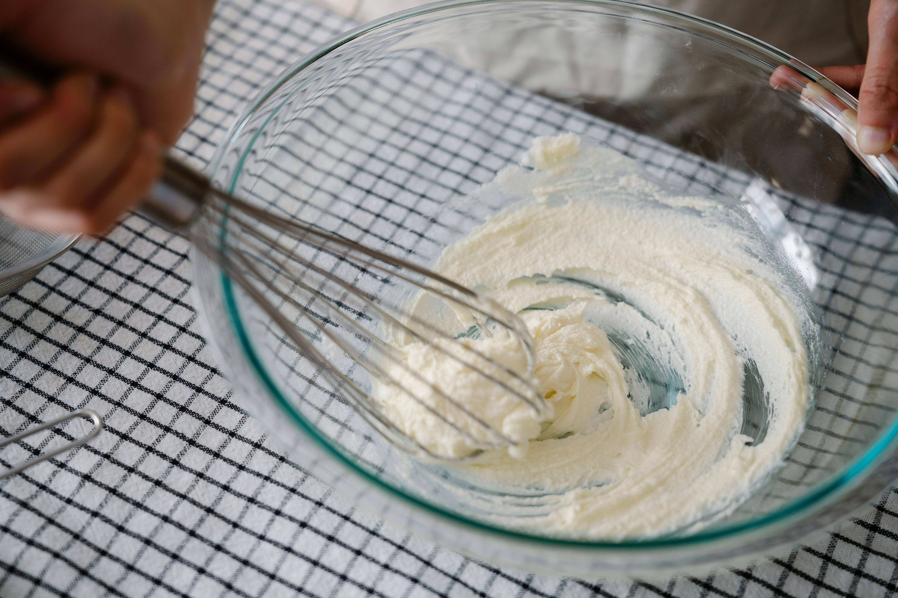
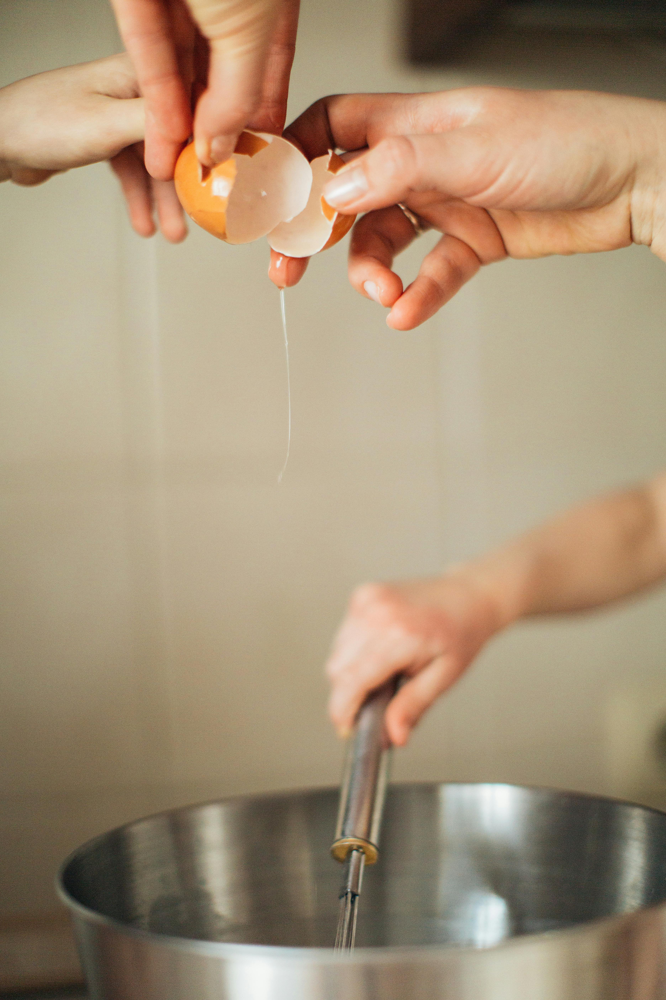
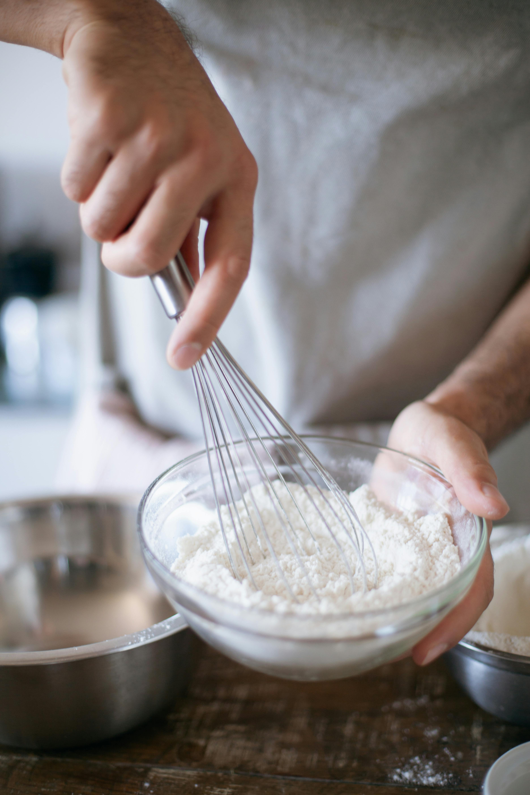
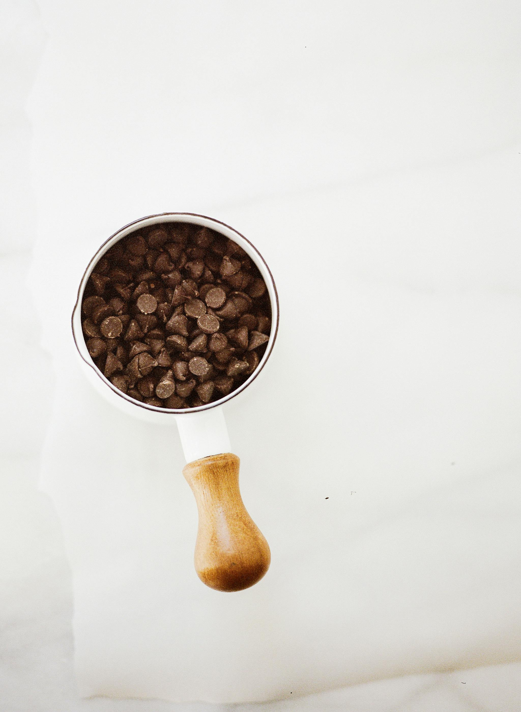

Ingredients
- 1 cup unsalted butter, softened
- 1 cup granulated sugar
- 1 cup brown sugar
- 2 eggs
- 1 teaspoon vanilla extract
- 3 cups all-purpose flour
- 1 teaspoon baking soda
- 1/2 teaspoon salt
- 2 cups chocolate chips
Step 1: Cream Butter and Sugars
In a large mixing bowl, mix together the softened butter, granulated sugar, and brown sugar until light and fluffy.
Step 2: Add Eggs and Vanilla
Crack in 2 eggs, then stir in 1 teaspoon vanilla extract in the bowl until well combined.
Step 3: Combine Dry Ingredients
In a separate bowl, whisk together flour, baking soda, and salt. Gradually add dry ingredients to the butter mixture, mixing until just combined.
Step 4: Add Chocolate Chips
Sprinkle some choclate chips in the dough and mix them together. Put as many as you like but 2 cups should be good.
Step 5: Bake and Enjoy!
Make small balls of dough and place them onto baking sheets lined with parchment paper. Bake at 375F for 9-10 minutes until edges are golden brown. Allow cookies to cool on baking sheets for a few minutes before transferring to wire racks to cool completely.Enjoy them as is or dip them in warm milk